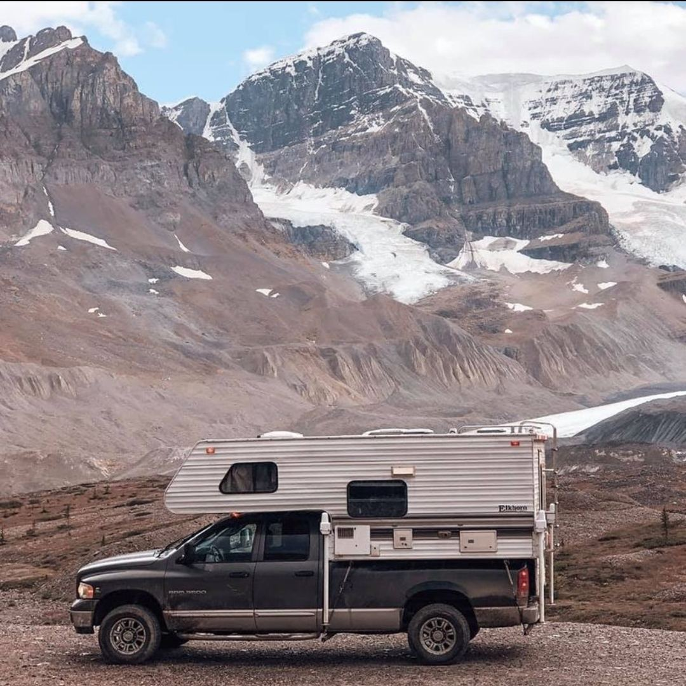

Caravan power: getting charge through the trailer plug

Picture it. You've towed the van 400km, the car's alternator has been working all day, and the caravan battery has barely moved. It's not your imagination, and it's probably not a fault.
The short version
- A caravan battery sits a long way from the car's alternator, and a long, thin cable loses a lot of charge. The trailer plug alone can't charge it well.
- The fix: run a heavy cable to an Anderson plug at the tow bar, and fit the DC-DC charger in the van, close to the battery.
- Caravans have big roofs, so solar often does most of the work. Add a blanket for shady camps and a 240V charger for powered sites.
In a campervan, the house battery is usually a few metres from the engine. In a caravan or camper trailer, it can be 10 metres away, through a plug at the tow bar. That's why a long drive can leave a caravan battery barely charged.
Why the long cable loses charge
Think of electricity like water in a garden hose. Voltage is the water pressure. Amps (current) is how much water flows. A long, skinny hose loses pressure along the way, so only a dribble comes out the far end. A short, fat hose keeps the pressure up.
Your battery is a tank you're filling. Water only goes in if the pressure at the hose end beats the pressure in the tank. A lithium battery typically needs about 14.2 to 14.6 volts to charge fully (check your battery's manual). An older alternator aims for about 14V, and a modern "smart" alternator can drop to about 12.5V once you're cruising. So there's very little pressure to spare before you even add a long cable.
This loss is called voltage drop. It gets worse with more distance, more amps and thinner wire. Here are rough numbers for about 10 metres from car battery to van battery (about 20 metres of wire there and back).
| Wire (copper area) | Current | Voltage lost | What that means |
|---|---|---|---|
| 2.5mm² (a typical trailer plug wire) | 15A | About 2.1V | 14V at the car would be about 11.9V at the van. In practice, very little goes in. |
| About 6mm² | 25A | About 1.4V | Still not enough pressure to fill a lithium battery on its own. |
| 16mm² | 25A | About 0.5V | Much better. A good feed for a DC-DC charger in the van. |
Estimates for copper wire with no allowance for plugs, joins or heat, which all add more loss. Have an auto electrician measure yours.
One trap: "6mm" auto cable is often named for its outside size, insulation included, and can have well under 6mm² of copper inside. Check the copper area (mm²) or B&S size (a wire gauge where a smaller number means thicker) on the spec sheet, not the name.
What the trailer plug can and can't do
The 7-pin or 12-pin plug at your tow bar was designed mainly for lights and brakes, not charging.
- Some trailer plugs have a 12V feed pin, but it uses thin wire. Fine for an "ignition on" signal, but as the table shows, not a real charge over 10 metres.
- Don't add power to a trailer plug pin yourself. Pin layouts vary, and on some trailers a pin controls the brakes. Leave plug wiring to an auto electrician.
So treat the trailer plug as the signal wire. Charging power needs its own heavy cable.
The fix: Anderson plug plus a DC-DC charger in the van
An Anderson plug is a chunky two-pin connector, often grey. The common size is rated for about 50A. The usual setup looks like this:
- A heavy twin cable runs from the car's starting battery to an Anderson plug at the tow bar, with a fuse close to the battery.
- A matching heavy cable runs from the van's Anderson plug to a DC-DC charger inside the van.
- The DC-DC charger sits close to the house battery. REDARC recommends mounting its chargers less than 1 metre from the battery they charge.
A DC-DC charger is like a pump at the end of the hose. It takes whatever pressure arrives and boosts it back up to what your battery needs. If the charger is in the car, you lose pressure on the long run after the pump, and the battery never quite fills.
As an example, one Australian camper trailer maker recommends 16mm² twin cable and a 50A Anderson plug for a 30A in-van charger. Your auto electrician will size it for your charger and cable length.
In-van chargers come at every price level: budget (Kings, Renogy), mid-range (REDARC BCDC Core, Projecta) and premium (REDARC Alpha, Enerdrive, Victron). Extra money mostly buys a longer warranty, app control and local support. As a rough guide, 25A units cost about $250 to $800.
Prices are approximate and change often. Check the charger suits your battery type and has a smart alternator setting.
How much charge you'll really get from driving
Even with a good setup, caravans usually get less from driving than a van, because of the long cable and plugs. So when you choose "Caravan or camper trailer", the Power Planner counts about 65% of the charger's rated amps, roughly a third less than the label. For a van or 4WD it counts about 90%.
For example, a 40A charger and 3 hours of driving could put in 120Ah on paper. The planner counts about 78Ah for a caravan. It's safer to plan low. More in DC-DC chargers explained.
Solar: caravans have room to spare
A caravan roof usually has more flat space than a campervan or 4WD. The planner allows up to about 800W of fixed panels on a caravan. Real-world output is roughly 70% of the panel rating times your peak sun hours. Peak sun hours are how many hours of full-strength sun a day is worth. So 400W in a spot with 5 peak sun hours gives about 400 x 0.7 x 5 = 1,400Wh (watt-hours), or roughly 115Ah a day at 12V. In a Melbourne winter, with about 2 peak sun hours, the same panels give about 47Ah.
The catch: in summer you'll want to park in the shade, which shades the roof panels too. A portable solar blanket fixes that. Leave the van under a tree and lay the blanket in the sun, plugged into a solar input that runs through a regulator. See How much solar do I need? for the numbers in your state.
Powered sites: a 240V battery charger
At a powered site you plug the van into the power pillar with a 15A lead. A mains battery charger in the van uses that power to top up your battery, so you leave for your next bush camp full. Anything connected to the caravan's 240V wiring must be installed by a licensed electrician. No DIY on mains wiring.
Sizing for typical caravan loads
Here's a typical caravan day with a compressor fridge, using the planner's figures. Amp-hours (Ah) are how much charge you use.
| Item | Rough use per day (summer) |
|---|---|
| Compressor fridge-freezer, 80 to 100L | About 50Ah |
| Fan overnight (8 hours) | About 10Ah |
| 12V TV (2 hours) | About 7Ah |
| A few LED lights (4 hours) | About 5Ah |
| Two phones charging | About 3Ah |
| Water pump (a few minutes at a time) | About 1Ah |
| Total | About 76Ah |
Estimates only. Your appliances and habits will differ. Fridges use about 30% less in winter.
For two days with no sun or driving, that's about 150Ah. A lithium battery gives you about 90% of its rating, so a 200Ah lithium battery covers it, paired with a 40A DC-DC charger. Your fridge is the big one, so Will my fridge last? is worth a read.
A note on 3-way fridges
Many caravans have a 3-way fridge (an absorption fridge) that runs on gas, 240V or 12V. On 12V it uses a heating element and draws a lot. One popular 90L model is rated at 175W on 12V, which is about 14.5A. Run all day, that would be around 350Ah, several times what a compressor fridge uses. So 12V mode is usually meant only while driving, to hold the temperature. At camp, switch to gas or 240V.

Our closest thing to a caravan was a slide-on camper on a Dodge Ram in Canada, with heating, a shower, a toilet and hot water. More comforts mean more power, and in the Canadian winter there was a lot less sun to make it. Plan for your gear and your worst season, not your best.
Choose "Caravan or camper trailer" in the Power Planner. It allows for the trailer cable loss, sizes your battery, solar and charger, and shows budget to premium options.
Plan my caravan poweror grab a ready-made kit
Kiran, Mitch & Ziggy
We last checked this page in October 2026. Spotted something that's changed, or got a question we didn't answer? Tell us, we read every message.
Quick answers
Can I charge my caravan battery through the trailer plug?
Not well. The cable from the car to the caravan battery is long and usually thin, so a lot of charge is lost on the way. The trailer plug alone can't charge a caravan battery properly.
What's the best way to charge a caravan battery while driving?
Run a heavy cable to an Anderson plug at the tow bar, and fit a DC-DC charger in the caravan, close to the battery. Have a licensed auto electrician fit it.
How much charge will my caravan get from driving?
Plan on about a third less than the charger's label, because of the long cable between the car and the van.
Sources
- REDARC: Choosing the right BCDC trailer charger for your towing setup
- REDARC: Where to mount your BCDC
- REDARC: How to set BCDC Classic and Core battery profiles
- REDARC: Smart alternator vs fixed alternator
- REDARC: How to wire a Manager30 from a caravan to a vehicle with a smart alternator
- Signature Camper Trailers: Vehicle electrical setup guide
- Wikipedia: Trailer connectors in Australia
- Engineering ToolBox: 12 volt wire loss chart
- Home of 12 Volt: Understanding 12 volt automotive cable
- Dometic RM2350 absorption fridge brochure
- Cruisin Motorhomes: Dometic fridge user guide
- Consumer Affairs Tasmania: Using electricity safely in caravans and tents
- Caravan World: Caravan electrics explained
Keep reading
 Start here
Start hereThe basics of off-grid power, simplified
Battery, solar, DC-DC charger and inverter, explained without the jargon. Batteries
BatteriesLithium vs AGM: which battery should you get?
The real difference, what it means for size, weight and cost, and when AGM still makes sense. Solar
SolarHow much solar do I need? By state and season
Why a Hobart winter and a Darwin winter need very different setups, with a table for every state. Charging
Charging